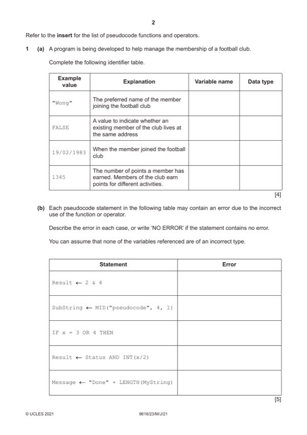

Question 1

Original paper page 2
Part 1(a) — solution
Answer: 4
4
Example
Explanation Variable name Data type
value
"Wong" The preferred name of the MemberName STRING
member joining the
football club
FALSE A value to indicate FamilyMember BOOLEAN
whether an existing
member of the club lives
at the same address
19/02/1983 When the member joined StartDate DATE
the football club
1345 The number of points a Points INTEGER
member has earned.
Members of the club earn
points for different
activities.
One mark for each appropriate variable name plus data type
Mark points
- Correct result: 4
Part 1(b) — solution
Answer: 5
- IF x = 3 OR 4 THEN incorrect operator //
Mark points
- IF x = 3 OR 4 THEN incorrect operator //
Part 1(c) — solution
- Record
- Allows different data types
- to be stored under one identifier
- Two (1D) arrays
- One of string, one of integer
- Where same index links the name with the score
Mark points
- Record
- Allows different data types
- to be stored under one identifier
- Two (1D) arrays
- One of string, one of integer
- Where same index links the name with the score
Part 1 — solution
All four boxes correctly labelled and positioned
Mark points
- Include the ideas shown in the solution above.
Part 1 — solution
Procedure heading (including parameter) and ending
Mark points
- Include the ideas shown in the solution above.
Part 1 — solution
Function heading, including return type and function end
Mark points
- Include the ideas shown in the solution above.
Part 1 — solution
Mention of variable for use as array index
Mark points
- Include the ideas shown in the solution above.
Part 1 — solution
Mention of variable for use as array index
Mark points
- Include the ideas shown in the solution above.